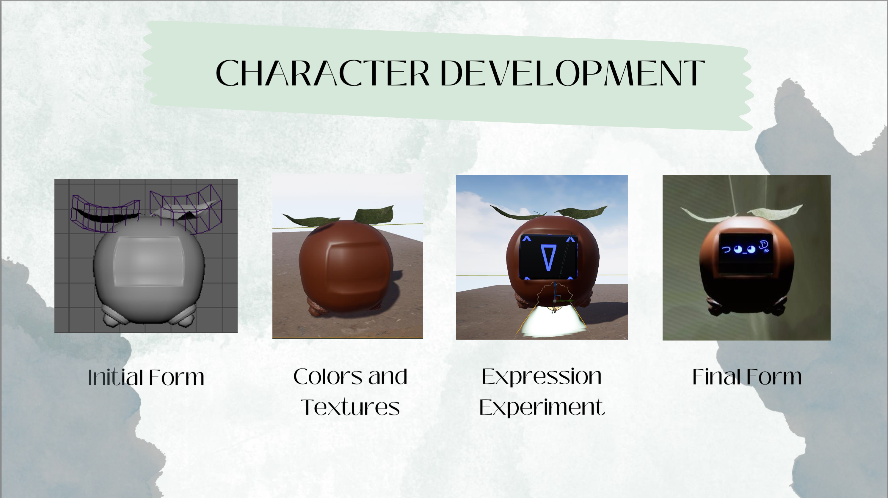
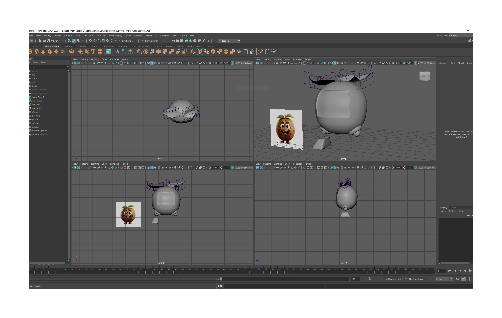
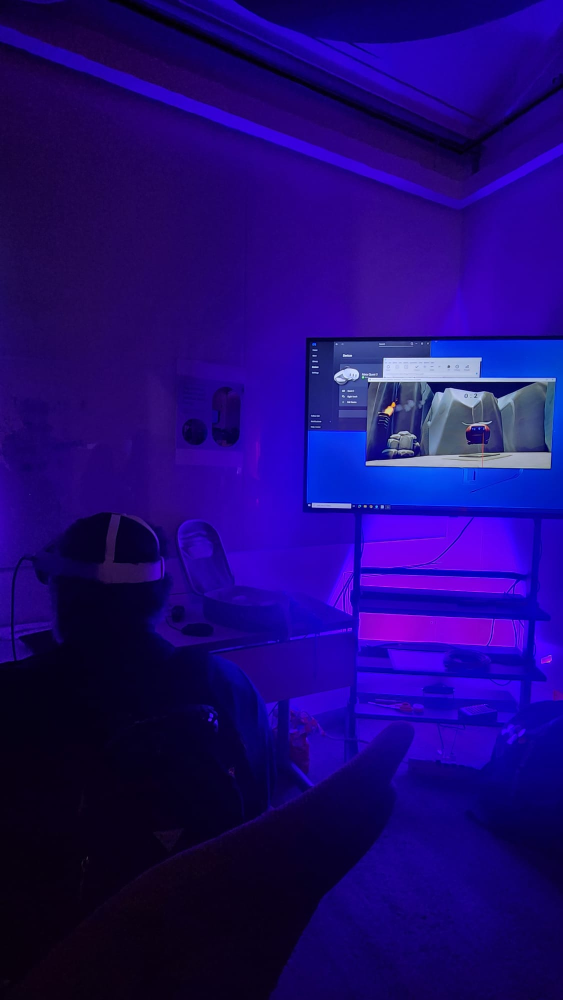
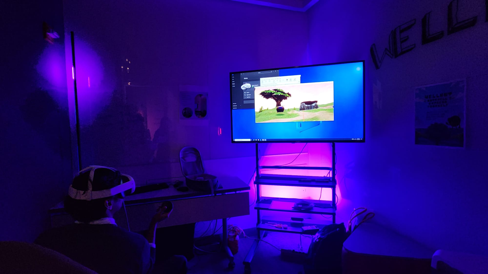
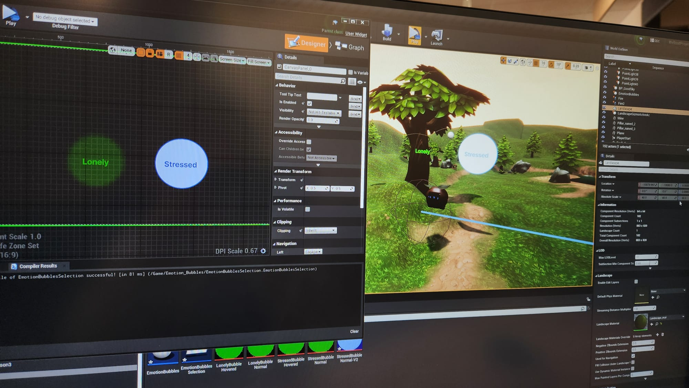
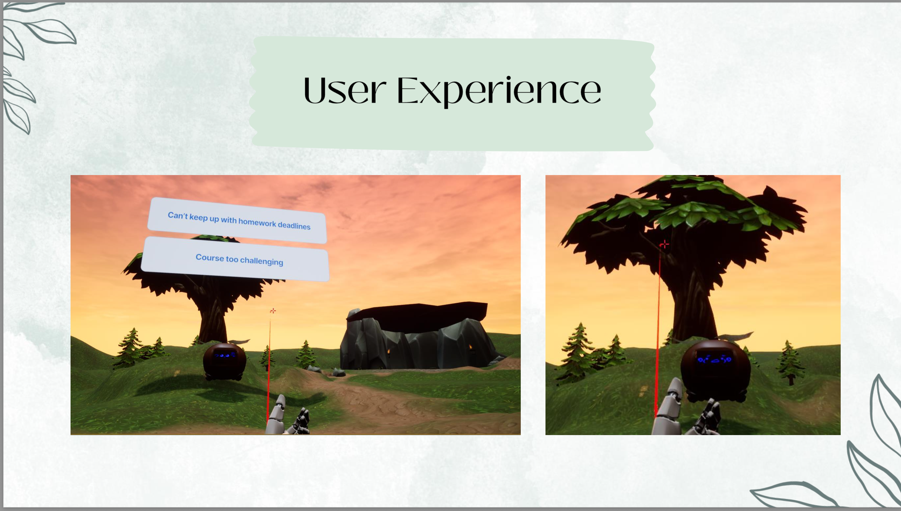

Academic VR Experience
WellNut: A Nutshell to Express Yourself
A VR Experience for Mental Health Awareness Among International Students
A calming VR storytelling experience designed to help international students feel supported, understood, and more comfortable engaging in conversations about mental health.
Meet WellNut
Reference-inspired reconstruction, not the original Maya asset.
- Project type
- Academic VR experience
- Role
- UX Designer and VR Interaction Designer
- Focus
- Mental health awareness among international students
- Contributions
- Character, story, game flow, VR interaction, Unreal implementation
- Tools
- Maya, Unreal Engine, Blueprints, UI Widgets
A gentle space for emotional reflection
WellNut is a VR storytelling experience designed to raise awareness of mental health challenges international students may face. It creates a calming, empathetic virtual space where users can feel supported and understood through guided conversations, character animations, and environmental choices.
WellNut responds emotionally and encourages low-pressure interaction. The experience supports awareness and reflection; it is not intended to diagnose mental health conditions or replace professional care.
Empathy shaped both the interaction and implementation
WellNut taught me how character-driven storytelling, thoughtful interaction design, and emotional UX can work together when addressing sensitive topics.
Character behavior that builds trust
Simple VR interactions with lower cognitive load
Hands-on technical problem-solving
The project helped me grow technically while staying grounded in empathy, accessibility, and user-centered design—values I carry into all my UX work.
Support can feel difficult to approach
International students can experience stress, isolation, cultural adjustment, and emotional overwhelm. Formal resources may feel intimidating, unfamiliar, or difficult to approach.
Central problem
“International students may need emotional support while also feeling hesitant to engage with formal or clinical mental health resources.”Design question
How might we create a gentle, non-clinical experience that helps international students feel emotionally supported and understood?
Meet a friendly virtual companion
Users enter through a gallery, choose an environment, and meet WellNut. Simple button responses guide a conversation while expressions and animations communicate emotional reactions.
- Enter VR
- Choose an Environment
- Meet WellNut
- Respond to Prompts
- See Emotional Reactions
- Reflect
Guided without feeling restrictive
Gentle, not clinical
Friendly language and character storytelling make reflection approachable.
Guided, not overwhelming
Simple choices reduce the cognitive and emotional effort to participate.
Expressive, not text-dependent
Expressions and animations add emotional context.
Calm, not distracting
Nature-inspired settings, restrained visuals, and intentional pacing create comfort.
Character, story, and VR interaction
01 / Main contribution
Character development
Character development was one of my main contributions to WellNut. I modeled the character in Maya, applied colors, textures, and materials in Unreal Engine, and explored facial expressions to develop a friendly, expressive companion.


02
Story & interaction design
Helped define personality, reactions, conversation flow, and button-based responses while considering language, timing, and emotional safety.
User response→WellNut reaction→Expression change→Next promptFlow only — replace with actual dialogue when available
03
Game flow & VR experience
Helped design the gallery entry, environment selection, and interaction logic, coordinating dialogue, animation, expression, interface, and timing through Unreal Blueprints.


Making WellNut emotionally responsive
Initial limitation
Facial expressions relied on static textures, making them difficult to change clearly during conversations.
Why it mattered
If reactions were hard to recognize, the conversation would feel less responsive and connected.
Breakthrough
I transitioned to UI Widgets in Unreal Engine so expressions could change more clearly.
Result
The widget system made emotional reactions more flexible and easier to coordinate with interaction moments.

The widget editor and in-world preview show how emotion selections appear within the experience.Click image to enlarge ↗

Response options and WellNut’s facial expressions shown in the virtual environment.Click image to enlarge ↗
The complete VR journey
Storyboard placeholder
01Enter the gallery
Begin gradually in an introductory room.
Storyboard placeholder
02Select an environment
Choose a setting before conversation.
Storyboard placeholder
03Meet WellNut
Meet the friendly companion.
Storyboard placeholder
04Respond simply
Communicate through button choices.
Storyboard placeholder
05Observe reactions
See dialogue, animation, and expression.
Storyboard placeholder
06Continue comfortably
Move at a guided, low-pressure pace.
Every choice supports emotional comfort
Calming environments
Nature-focused settings create calm.
PurposeGive users control over where interaction occurs.
Expressive animation
Expressions and movement communicate warmth.
PurposeBuild trust and connection.
Simple interactions
Clear buttons replace complicated controls.
PurposeReduce cognitive and emotional load.
Gradual entry
A gallery allows orientation first.
PurposeAvoid immediate emotional intensity.
Technical literacy in service of the story
Character modeling
VR environment, materials, implementation
Interaction logic
Expressions and interface elements
Interaction logic coordinated user responses, conversation progression, expressions, animations, interface visibility, and timing.
Learning a new engine while designing with care
No one on the team had prior Unreal experience; we were learning while building a sensitive VR experience.
Experiment, troubleshoot behavior, and iterate on connections between story, animation, and interface.
UI Widgets transformed a mostly static model into a more responsive companion.
Greater technical confidence, persistence, and capacity for unfamiliar interaction problems.
“The technical solution mattered because it supported the emotional goal of the experience. Improving WellNut’s expressions made the character more responsive, understandable, and human.”
Future directions, not completed features
- Expand selectable environments, including beach, mountain, and indoor settings
- Refine expressions and animations
- Test whether conversation options feel clear and supportive
- Evaluate accessibility of VR controls and interfaces
- Explore personalization
- Conduct usability testing with international students
- Develop clearer transitions into and out of sensitive content
“Meaningful interaction design is not only about helping users complete tasks. It can also shape how people feel during an experience.”
By combining character design, guided storytelling, environmental design, and VR interaction, I learned how technology can support emotional connection in a gentle and approachable way. The project strengthened my technical skills while reinforcing the importance of empathy, accessibility, and care in every design decision.